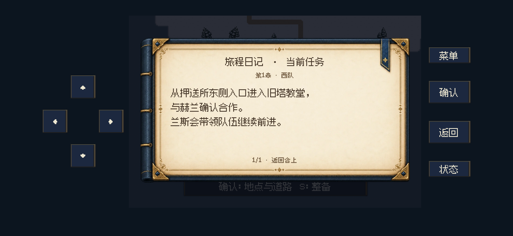

日志像一本日记
纸页与装订材质、深色大字正文、按语意换行，内容过长可翻页。泉水有可见入口
右侧墙面留出通道，画面入口与实际行走、朝向交互对齐。先看清，再进阶
小弹框选人 → 职业与属性预览 → 独立二次确认。01 · 旅程日记
保留现有剧情进度判断。正文从原来的 8 像素改为 12 像素中文字体，按句意与可用宽度排版。纸页按固定 8:5 比例显示，装订、角饰和书签不参与拉伸；小屏幕通过分页容纳全文。

旅程日记：纸页材质、较大正文、按语意换行，保留当前世界作为背景
02 · 泉水入口
开放西南侧龛的东侧墙口。从教堂南门进入后，沿下侧走道向左，再向上到泉水右边，朝左按确认即可调查。合作完成后按原有份额与濒死条件打开救治选择。
04 · 小屏幕布局
覆盖 2556×1179、1334×750 与 884×480 三种画幅。最窄的游戏区域为 256 逻辑像素；保留两幅职业模型与全部八项属性，按钮使用材质背景和柔和选中光晕。